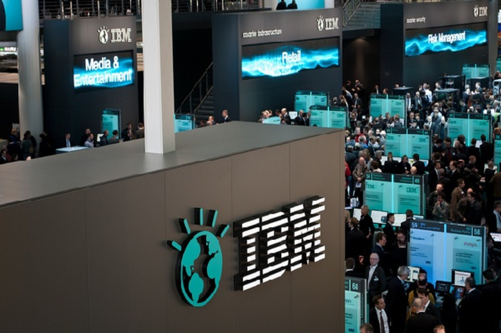

This project empowers autistic children by improving their understanding of social environments. Using advanced machine learning models, we identify and analyze these environments, leading to better social comprehension and enhanced learning experiences.
Utilizing PySpark to analyse user activity on ecommerce website based on session usage metrics. Ultimately making use of PCA to reduce dimensionality and narrow down to critical parameters that affect purchasing decision of users and developing machine learning model to identify revenue generating user sessions.
I collaborated with a team to integrate external data models into a university's financial database using SQL scripts in Azure Data Studio. Additionally, I developed a PowerApps application to collect and analyze data from 450-500 international students, offering insights into their preferences within the university area.

This project focuses on the fictional merger of Fudgeflix and Fudgemart, similar to Netflix and Amazon. It aims to create a unified Data Warehouse for the Fudge Companies, streamlining data integration and supporting essential business operations following Fudgemart's acquisition of Fudgeflix.
Unlocking the mysteries of healthcare costs, our EDA analysis reveals key drivers and correlations. Through machine learning techniques like SVM classification and Association Rule Mining, our model predicts high-cost customers using their historical health data.
Delve into the world of Spotify data as we conduct EDA and data mining, unveiling the all-time best artist of the past two decades. Get ready to be mesmerized by the mastermind behind the melodies that have shaped our musical landscape.

This dashboard represents insights of analysis of high attrition in IBM. It includes various deeper navigations to explore certain aspects like Age, Income, Ratings about work and relationships.